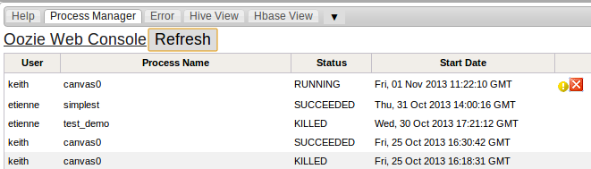

The Process Manager is a way to view the list of jobs that have been submited to Oozie . It is also possible to kill processes that are running. There is also a link to the Oozie Web Console that will show more details about the jobs submited to Oozie.

return to IDM help